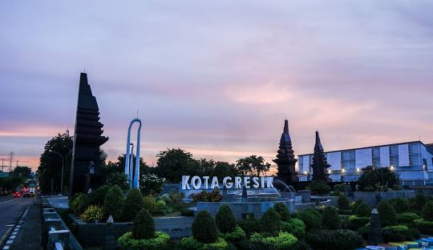
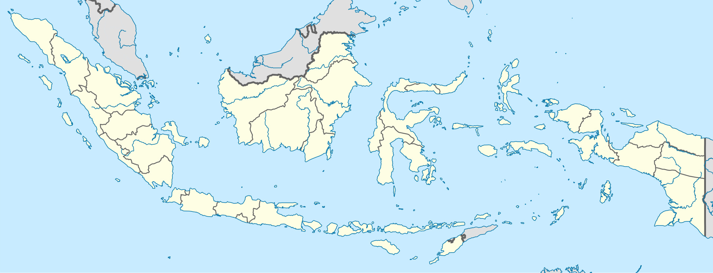
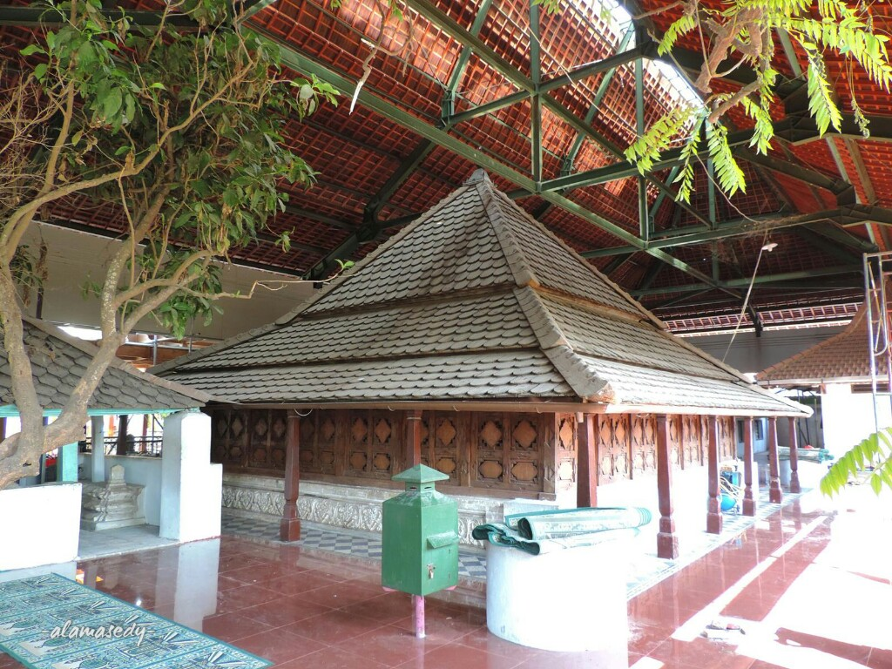
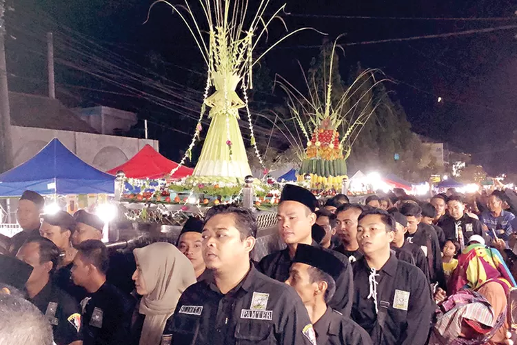
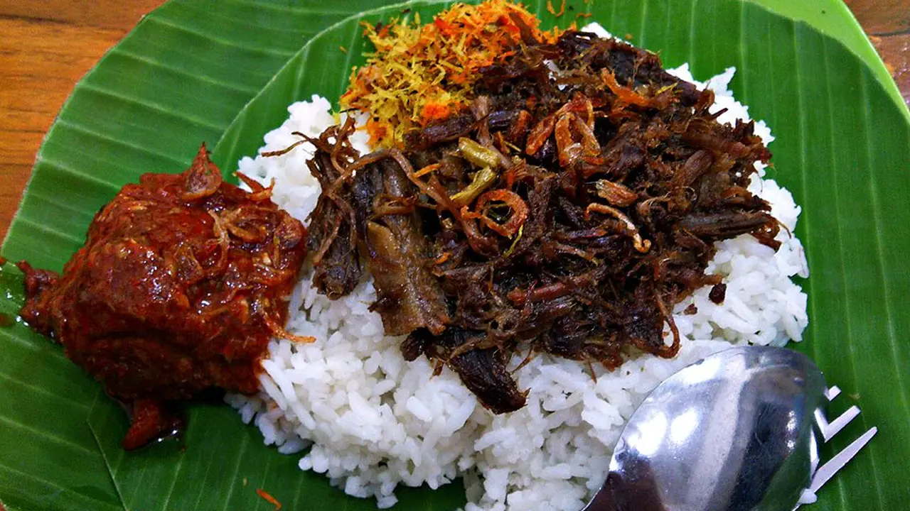
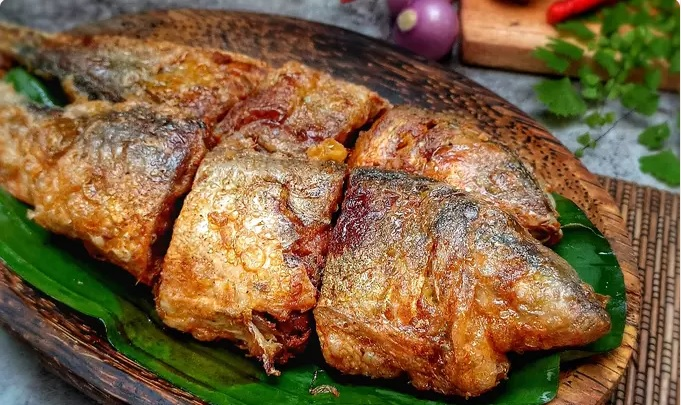
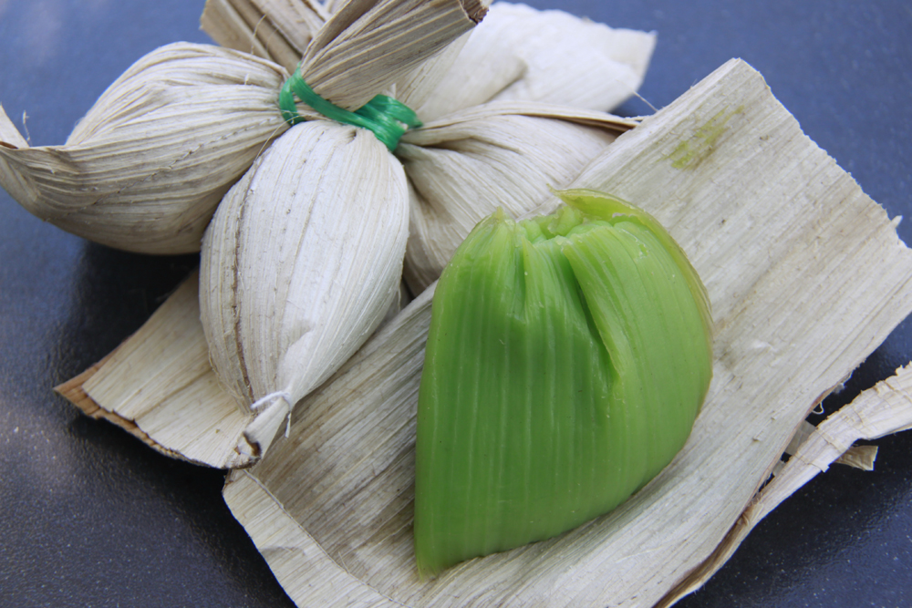

sejarah

Gresik sudah menjadi salah satu pelabuhan utama dan kota dagang yang cukup penting sejak abad ke-14, serta menjadi tempat persinggahan kapal-kapal dari Maluku menuju Sumatra dan daratan Asia (termasuk India dan Persia). Hal ini berlanjut hingga era VOC. Pada tahun 1680 kedatuan Giri tunduk dibawah Mataram, selanjutnya Gresik dipegang oleh Kyai Puspodiwangsa pada tahun 1688, dengan nama gelar Kyai Tumenggung Pusponegoro. Tahun 1738 Gresik diambil alih oleh Madura ketika Bupati-Bupati Jawa di Mataram, kemudian Bupati Gresik merebut kembali tahta Gresik dibantu Oleh Bupati Ponorogo hingga kembali. Pada awal Kemerdekaan Indonesia, Kabupaten Gresik hanyalah sebuah kawedanan dibawah Kabupaten Surabaya. Didirikannya Pabrik Semen Gresik pada tahun 1953 merupakan titik awal industrialisasi di Gresik.
Semula Kabupaten Gresik ini bernama Kabupaten Surabaya (masuk wilayah administrasi Surabaya). Memasuki dilaksanakannya PP Nomor 38 Tahun 1974, seluruh kegiatan pemerintahan mulai berangsur-angsur dipindahkan ke Kabupaten Gresik. Kabupaten Gresik terkenal sebagai Kota Walisongo, hal ini ditandai dengan penggalian sejarah yang berkenaan dengan peranan dan keberadaan para wali yang makamnya berada di Kabupaten Gresik yaitu, Sunan Giri dan Syekh Maulana Malik Ibrahim. Di samping itu, Kabupaten Gresik disebut sebagai Kota Santri yang berarti Kawasan Industri dengan Slogan Kota Gresik Berhias Iman yang berarti Gresik yang bersih, hijau, aman sehat, menuju kawasan industri, maritim, agama, dan niaga.
geologis

Kabupaten Gresik termasuk salah satu kabupaten di dalam wilayah pesisir utara Provinsi Jawa Timur.[6] Letak Kabupaten Gresik berada di sebelah barat laut Kota Surabaya yang merupakan ibu kota provinsi. Pusat Pemerintahan Kabupaten Gresik yaitu Kecamatan Gresik berada 20 km sebelah utara Kota Surabaya. Kabupaten Gresik terbagi dalam 18 kecamatan dan terdiri dari 330 desa dan 26 kelurahan. Secara geografis, wilayah Kabupaten Gresik terletak antara 112°–113° BT dan 7°–8° LS dan merupakan dataran rendah dengan ketinggian 2–12 meter di atas permukaan air laut, kecuali Kecamatan Panceng yang mempunyai ketinggian 25 meter di atas permukaan laut.
Sebagian wilayah Kabupaten Gresik merupakan daerah pesisir pantai, yaitu memanjang mulai dari Kecamatan Kebomas, Gresik, Manyar, Bungah, Sidayu, Ujung Pangkah dan Panceng serta Kecamatan Sangkapura dan Tambak yang lokasinya berada di Pulau Bawean. Jenis tanah di wilayah Kabupaten Gresik sebagian besar merupakan tanah kapur yang relatif tandus. Ketinggian tanah di Wilayah Kabupaten Gresik berada pada 0 – 500 meter di atas permukaan laut (mdpl) pada elevasi terendah terdapat di daerah sekitar muara Sungai Bengawan Solo dan Kali Lamong. Kondisi topografi pada Kabupaten Gresik bervariasi pada kemiringan 0-2 %, 3-15 %, dan 16-40% serta lebih dari 40 %. Sebagian besar mempunyai kemiringan 0-2 % mempunyai luas + 94.613,00 Ha atau sekitar 80,59 %, sedangkan wilayah yang mempunyai kemiringan lebih dari 40 % lebih sedikit + 1.072,23 Ha atau sekitar 0,91%
wisata
Pulau Jawa memang terdiri dari berbagai daerah yang masing-masing memiliki keindahan wisata yang wajib untuk dikunjungi. Salah satunya yaitu di sekitaran Gresik yang berada di Jawa Timur. Kabupaten yang berlokasi di penghujung Jawa dekat dengan Pulau Bali ini menyimpan segudang keindahan, baik itu wisata alam atau pun wisata buatan yang menjadi daya tertarik tersendiri bagi para wisatawan.
Pulau Bawean
Pulau Bawean bisa dibilang tempat favorite untuk dikunjungi di Jawa Timur. Untuk datang ke tempat ini Anda hanya perlu menggunakan kapal motor dari Pelabuhan Gresik. Perjalanan dari pelabuhan ke tempat wisata Pulau Bawean hanya memakan sekitar 3 sampai 4 jam saja.
Gresik juga memiliki julukan sebagai Kota Wali, yang menjadi sejarah penyebaran Agama Islam di kawasan Indonesia Nusantara. Maka tak heran, di sekitar Gresik Anda dapat menemukan berbagai makam para wali, seperti Sunan Giri, Syekh Maulana Malik Ibrahim, dan lain sebagainya.
Makam Sunan Giri

Kompleks pemakaman Sunan Giri terletak di Kecamatan Kebomas, Gresik. Sunan Giri merupakan salah satu Wali Songo yang memiliki nama asli Raden Paku Muhammad Ainul Yaqin.
Selain itu ada tradisi yang telah cukup lama hingga sekarang masih terus berlangsung yakni tradisi Padusan, Kolak Ayam Sangring, Malem Selawe, Pasar Bandeng, Kupatan, Rebo Wekasan, dan Barikan
Rabo Wekasan

Rebo Wekasan atau Rebo Pungkasan adalah nama hari Rabu terakhir di bulan Sapar pada Kalender Hijriah.
kuliner
Makanan khas Gresik bisa dijadikan tujuan wisata kuliner yang unik. Hal ini karena berbagai makanan khas Kota Gresik ini mungkin tidak bisa kamu jumpai di tempat lainnya. Apalagi, soal rasa kamu tidak perlu meragukannya, makanan-makanan ini dapat menggugah selera penikmat kuliner
Nasi Krawu

Salah satu makanan khas Gresik yang sudah sangat terkenal adalah Nasi Krawu. Nasi krawu merupakan salah satu kuliner yang sangat populer di kalangan masyarakat Gresik. Disajikan beralaskan daun pisang, membuat kamu menyantap masakan yang satu ini dengan nikmatnya.
Makanan khas Gresik ini terdiri dari makanan berat hingga camilan. Kamu bisa memilih makanan yang kamu suka sesuai selera. Wisata kuliner yang diberikan Kota Gresik memang sangat beragam, sehingga kamu bisa mencoba berbagai makanan dengan cita rasa yang berbeda-beda.
Otak-Otak Bandeng

Otak-otang Bandeng merupakan makanan khas Gresik yang terbuat dari ikan bandeng. Ikan ini diolah dengan memisahkan daging dan kulitnya, kemudian dihaluskan. Setelah halus, daging bandeng diberi bumbu racikan khas Gresik serta dimasukkan lagi ke dalam badan ikan. Setelah itu ikan bandeng dikukus sampai matang.
Makanan khas Gresik juga bisa dijadikan oleh-oleh. Jadi, kamu juga bisa membawa pulang beberapa oleh-oleh Kota Gresik berupa makanan yang unik. Kamu bisa menikmatinya bersama keluarga di rumah.
Pudak

Pudak merupakan salah satu makanan khas Gresik yang tak kalah enak. Pudak dibuat dari campuran santan kelapa, gula jawa dan tepung beras. Makanan khas Gresik ini dibungkus pelepah pisang dan dikukus hingga matang.